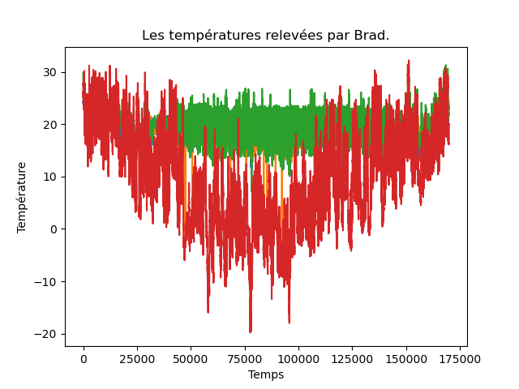
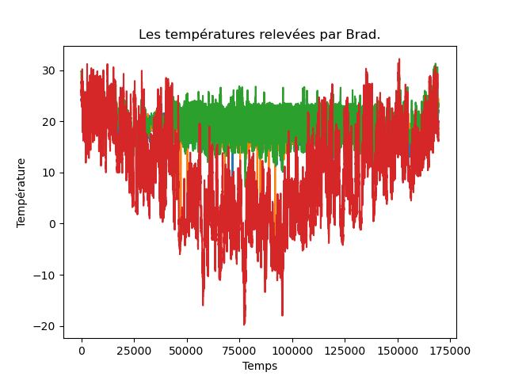
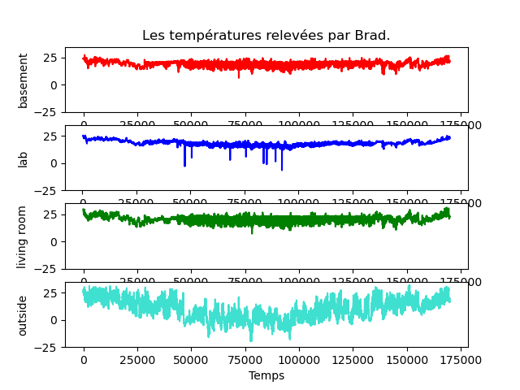
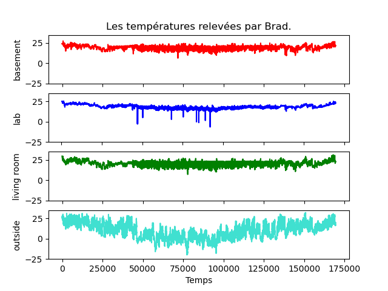

Dans un TP précédent, on a vu comment réaliser des graphiques.
Comme toujours avec python, il existe plusieurs manières de réaliser à peu près la même chose. Lors de ce TP, nous avions utilisé les fonctions graphiques du paquetage pandas qui elles-mêmes utilisent celles du paquetage matplotlib. Ce dernier est un paquetage très utile et de grande qualité, très riche en possibilités dont seule une petite partie peut être utilisée via panda.
On peut utiliser directement matplotlib ce qui donne beaucoup plus de libertés et qui est très pratique lorsque l'on veut réaliser une figure contenant plusieurs graphiques. C'est celui-là que j'ai utilisé pour le TP Brad's sweet home pour réaliser la figure avec les 4 courbes de températures par exemple.
Ce court TP a pour objectif de vous présenter cette autre manière de faire.
On considère la figure suivante du TP Brad's sweet home :

On l'a dit, c'est un mauvais graphique où l'on ne voit rien, mais il est très simple, donc facile à expliquer pour commencer. On compare ce que l'on a fait précédemment avec une autre manière de faire. Les deux utilisent le paquetage matplotlib.
| Vu précédemment | 2è manière avec matplotlib | |
|---|---|---|
| figure, axe = plt.subplots () | ||
| for a in ["temp_b", "temp_l", "temp_lr", "temp_o"]: | for a in ["temp_b", "temp_l", "temp_lr", "temp_o"]: | |
| plt.plot (brad [a]) # ou brad [a].plot () | axe.plot (brad [a]) | |
| plt.xlabel ("Temps") | axe.set_xlabel ("Temps") | |
| plt.ylabel ("Température") | axe.set_ylabel ("Température") | |
| plt.title ("Les températures relevées par Brad.") | axe.set_title ("Les températures relevées par Brad.") | |
| plt.show () | figure.show () | |
|  |
À faire : faites les 2 manières et comparer.
La 2è manière est très utile lorsqu'une figure est composée de plusieurs sous-figures. Dans ce premier exemple, il n'y a qu'une seule sous-figure qui est la partie contenant le graphique. On verra plus bas un exemple avec des sous-figures.
Dans la 2è manière, on commence par une instruction figure, axe = plt.subplots () qui crée deux objects, un objet figure et un objet axe. L'objet figure contient l'ensemble de la figure : quand cette figure ne contient qu'une seule sous-figure, on ne comprend pas forcément la différence entre figure et sous-figure, on comprendra mieux un peu plus tard. Dans une figure, il peut y avoir plusieurs « axes », c'est-à-dire plusieurs sous-figures. Quand on invoque la méthode subplots () sans argument, celle-ci crée une figure qui contient une seule sous-figure ; c'est ce que nous faisons ici. Le contenu de la sous-figure est spécifié via l'axe. Ici, on commence par ajouter les 4 séries de températures avec une boucle, puis on spécifie l'étiquette des abscisses, puis des ordonnées, puis un titre pour la sous-figure. Enfin, on l'affiche à l'écran.
Maintenant, on va réaliser une figure contenant des sous-figures, comme celle-ci du TP Brad's sweet home :

Ici, on voit qu'il y a 4 sous-figures, une sous-figure par série de températures.
Une première manière de créer cette figure :
labels = ["basement", "lab", "living room", "outside"]
fig, ax = plt.subplots (4,1)
ax [0].plot (brad.iloc [:,5], c = "red")
ax [1].plot (brad.iloc [:,6], c = "blue")
ax [2].plot (brad.iloc [:,7], c = "green")
ax [3].plot (brad.iloc [:,8], c = "turquoise")
for i in range (4):
ax [i].set_ylim (bottom = -25, top = 35)
ax [i].set_ylabel (labels [i])
ax[3].set_xlabel ("Temps")
ax[0].set_title ("Les températures relevées par Brad.")
fig.show ()
L'instruction plt.subplots (4,1) indique que la figure est composée de 4 éléments, chacune pouvant contenir une sous-figure. Chacune de ces sous-figure est un axe. Ici ax et un tableau composé de 4 lignes et 1 colonne, ax [ligne] permet de spécifier une certaine sous-figure (en ligne ligne). On peut dispose les sous-figures sur plusieurs lignes et plusieurs colonnes ; dans ce cas, on écrit ax [ligne, colonne].
Ensuite, on dessine le contenu de chaque sous-figure en indiquant : dans tel axe, on représente telle donnée.
Ensuite, dans la boucle, on indique pour chaque axe l'intervalle de valeurs en ordonnées afin que les sous-figures soient facilement comparables, ainsi qu'une étiquette indiquant ce que représente l'axe des ordonnées pour chacune des sous-figures.
Ensuite, on indique ce que représente l'axe des abscisses. Plutôt que de l'indiquer pour chaque axe, on l'indique seulement pour la sous-figure qui se trouve en bas de la figure (axe 3).
Enfin, on donne un titre à la figure entière en donnant un titre à l'axe 0 qui est celui qui est en haut de la figure.
À faire : les axes des abscisses des 4 sous-figures sont les mêmes. Aussi, il n'est pas nécessaire d'afficher l'axe des abscisses des 3 sous-figures du haut (living room, lab, basement) que l'on voit mal. Utiliser la méthode set_xtickslabels ("") pour les retirer et obtenir cette figure ci-dessous :

Une autre version un peu plus sophistiquée avec une boucle qui fait tout le travail : une itération par série de températures.
labels = ["basement", "lab", "living room", "outside"]
couleurs = ["red", "blue", "green", "turquoise"]
fig, ax = plt.subplots (4,1)
for i in range (4):
ax [i].plot (brad.iloc [:,i+5], c = couleurs [i])
ax [i].set_ylim (bottom = -25, top = 35)
ax [i].set_ylabel (labels [i])
ax[3].set_xlabel ("Temps")
ax[0].set_title ("Les températures relevées par Brad.")
fig.show ()
Les possibilités de matplotlib sont très nombreuses. Vous pouvez réaliser à peu près n'importe quel graphique, ... plus ou moins facilement. Il faut consulter la documentation :